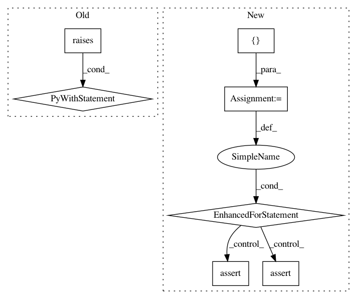

46f3fa12d06827d975ba925f183637ad6916eaa8,mne/io/ctf/tests/test_ctf.py,,test_saving_picked,#,274
Before Change
// If comp is applied, picking should error
raw.apply_gradient_compensation(1)
assert raw.compensation_grade == get_current_comp(raw.info) == 1
with pytest.raises(RuntimeError, match="Compensation grade 1 has been"):
raw.copy().pick_types(**pick_kwargs)
run_tests_if_main()
After Change
assert raw.compensation_grade == get_current_comp(raw.info) == 0
assert len(raw.info["comps"]) == 5
pick_kwargs = dict(meg=True, ref_meg=False, verbose=True)
for comp_grade in [0, 1]:
raw.apply_gradient_compensation(comp_grade)
with catch_logging() as log:
raw_pick = raw.copy().pick_types(**pick_kwargs)
assert len(raw.info["comps"]) == 5
assert len(raw_pick.info["comps"]) == 0
log = log.getvalue()
assert "Removing 5 compensators" in log
raw_pick.save(out_fname, overwrite=True) // should work
raw2 = read_raw_fif(out_fname)
assert (raw_pick.ch_names == raw2.ch_names)
assert_array_equal(raw_pick.times, raw2.times)
assert_allclose(raw2[0:20][0], raw_pick[0:20][0], rtol=1e-6,
atol=1e-20) // atol is very small but > 0
raw2 = read_raw_fif(out_fname, preload=True)
assert (raw_pick.ch_names == raw2.ch_names)
assert_array_equal(raw_pick.times, raw2.times)
assert_allclose(raw2[0:20][0], raw_pick[0:20][0], rtol=1e-6,
atol=1e-20) // atol is very small but > 0
run_tests_if_main()
In pattern: SUPERPATTERN
Frequency: 3
Non-data size: 7
Instances
Project Name: mne-tools/mne-python
Commit Name: 46f3fa12d06827d975ba925f183637ad6916eaa8
Time: 2018-10-12
Author: luke.bloy@gmail.com
File Name: mne/io/ctf/tests/test_ctf.py
Class Name:
Method Name: test_saving_picked
Project Name: pandas-dev/pandas
Commit Name: 412554b2f06f3782c9336f5a4dfc5bb890219afd
Time: 2021-01-21
Author: jbrockmendel@gmail.com
File Name: pandas/tests/indexing/test_coercion.py
Class Name: TestInsertIndexCoercion
Method Name: test_insert_index_timedelta64
Project Name: chartbeat-labs/textacy
Commit Name: 212e11f09b4826456b0641edf717c38a74f71216
Time: 2019-07-14
Author: burtdewilde@gmail.com
File Name: tests/preprocessing/test_remove.py
Class Name:
Method Name: test_remove_accents